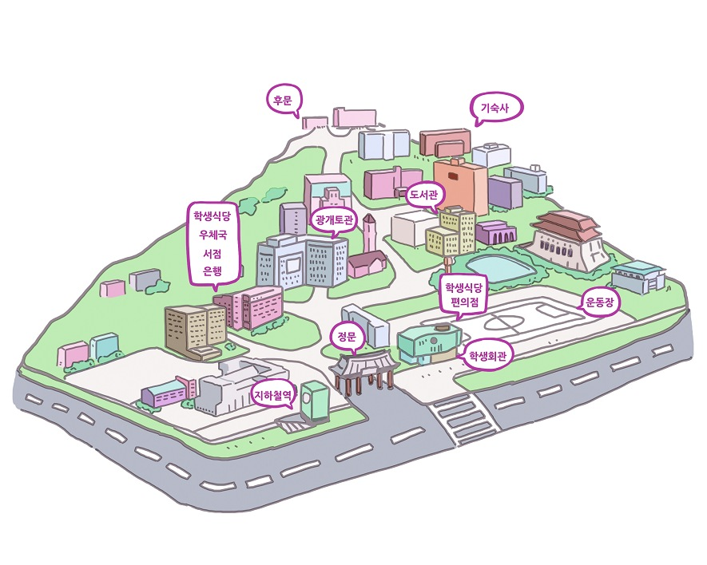

- 압둘라 씨가 한국 음식을 먹을 테니까 준비하세요.
- 음식이 뜨거울 테니까 조심하세요.
- 이 문법은 로빈 씨가 잘 알 테니까 로빈 씨에게 물어보세요.
- 어제는 힘들었을 테니까 오늘은 좀 천천히 하세요.
로 빈: 요코 씨, 한국 역사책을 어디에서 샀어요?
요 코: 한국 역사책이요? 시내에 있는 세종서점에서 샀어요.
로 빈: 세종서점에 어떻게 가요? 내일까지 책을 사야하는데 어떻게 세종서점까지 가는지 모르겠어요.
요 코: 학교 앞 버스 정류장에서 1002번 버스를 타면 돼요. 시청을 지나서 사거리 앞에서 내리세요.
로 빈: 잘 모르겠어요.미안한테 오늘 저와 함께 갈 수 있어요?
요 코: 미안해요. 오늘은 수업이 끝나자마자 기숙사에서 한국 친구를 만나기로 했어요.
로 빈: 그럼 다른 친구에게 다시 한번 물어볼게요.
요 코: 압둘라 씨도 세종서점을 잘 알 테니까 전화해 보세요.
요코 씨/한국 역사책/
어디/ 사다?
세종서점/어떻게/가다
내일까지/책/사다/
어떻게/세종서점/
가다/줄 모르다
잘 모르다/
미안하다/
오늘/저/함께/
가다/수 있다?
그럼/다른 친구/
다시 한번/
물어보다
한국 역사책?
시내/있다/세종서점/
사다
학교 앞/버스 정류장/
1002번 버스/
타다/시청/지나다/
사거리 앞/내리다
미안하다
오늘/수업/끝나다/
자마자/기숙사/한국
친구/만나다/하다
압둘라 씨/
세종서점/잘 알다/
테니까/
전화하다/보다
요코 씨/
그 여행 가방/ 어디/
사다?
동대문/어떻게/가다
내일까지/여행가방/사다/
동대문/가다/줄모르다
요코 씨/미안하다/
오늘/오후/저/함께/
같이/가다/수 있다?
잘/몰다
한국 친구/한번/
묻다/보다
이 여행 가방요?
동대문/있다/
가게/사다
학교앞/지하철역/
지하철/타다/시청/
지나다/다음역/내리다
미안하다/오늘/수업/
끝나다/자마자/
아르바이트/가다/하다
그럼/우선/지하철/타다/
자마자/저/전화를하다/그러면/
제가/자세히/알려주다
① 숙제를 함께 하려고
② 컴퓨터를 배우려고
③ 한국 친구를 만나려고
④ 한국어로 이메일을 쓰려고
① 요코 씨는 한국 친구에게 편지를 보낼 것이다.
② 꾸엔 씨는 한국어로 이메일을 잘 보낼 줄 안다.
③ 요코 씨는 한국어로 이메일을 잘 보낼 줄 모른다.
④ 꾸엔 씨 집은 시청역 4번 출구로 나가자마자 있다.
1) 다음 중 맞는 것을 고르세요.
① 우리집까지는 버스만 타고 갈 수 있다.
② 시청역에서 내리자마자 전화를 하라고 했다.
③ 우리집까지는 지하철을 타면 한 번에 갈 수 있다.
④ 세종호텔에서 우리집까지는 100m를 더 가야 한다.
| [보기] | 출발 | 도착 |
|---|---|---|
| 병원 | 기숙사 | |
| 1) | 빵집 | |
| 2) | 약국 |